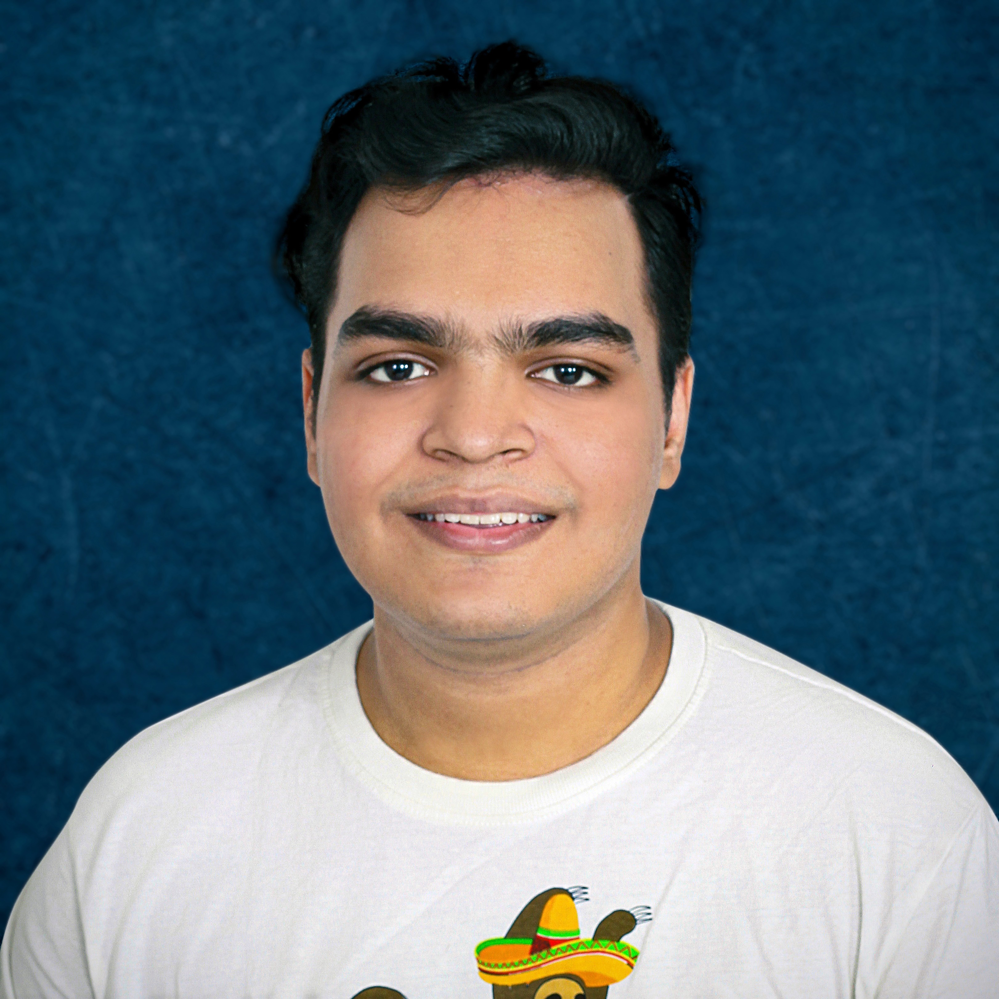

EACL 2027 • Main Conference
FlowNeg: GFlowNet-Guided Diverse Hard Negative Sampling for Knowledge Graph Embedding
Paper
Acceptance rate: 13.5% • Core A

I’m a researcher from Dhaka, Bangladesh, with an M.S. in Computer Science from the University of Delaware.
Outside research: avid gamer (known by the in-game name LePotatoGuy), traveller, anime and comic enthusiast, cyclist, and a chess player rated ~400 (which means I lose often and confidently). For more about me, visit here.
Fun facts: I've visited nearly half the states in the U.S., and my Erdős number is 4.
My earlier research focused on developing lightweight and deployable machine learning systems, particularly computer vision under resource constraints for medical imaging and environmental sensing. My current interests are efficient language model systems, reliable AI, reinforcement learning and sequential decision-making, and graph representation learning. Across these areas, I ask how learning systems can use limited data and computation well, and what evidence supports their decisions. I also continue my work in medical imaging.
My frequent collaborators include Dr. Ibne Farabi Shihab (Amazon), Meem Arafat Manab (phd researcher, Universidad Politécnica de Madrid, Spain), Md Farhadul Islam (phd researcher, Kentucky), Dr. Jannatun Noor (United International University, Bangladesh), and Dr. A. B. M. Alim Al Islam (BUET, Bangladesh).
I am honored to be part of a distinguished academic lineage connecting to figures such as Isaac Newton, De Morgan, Thomson, and Rutherford.